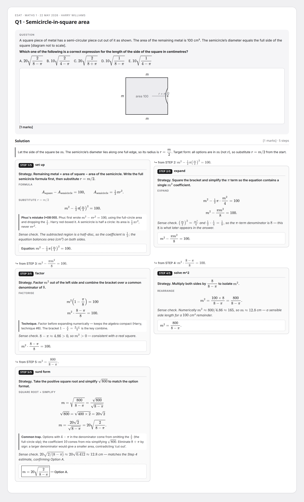
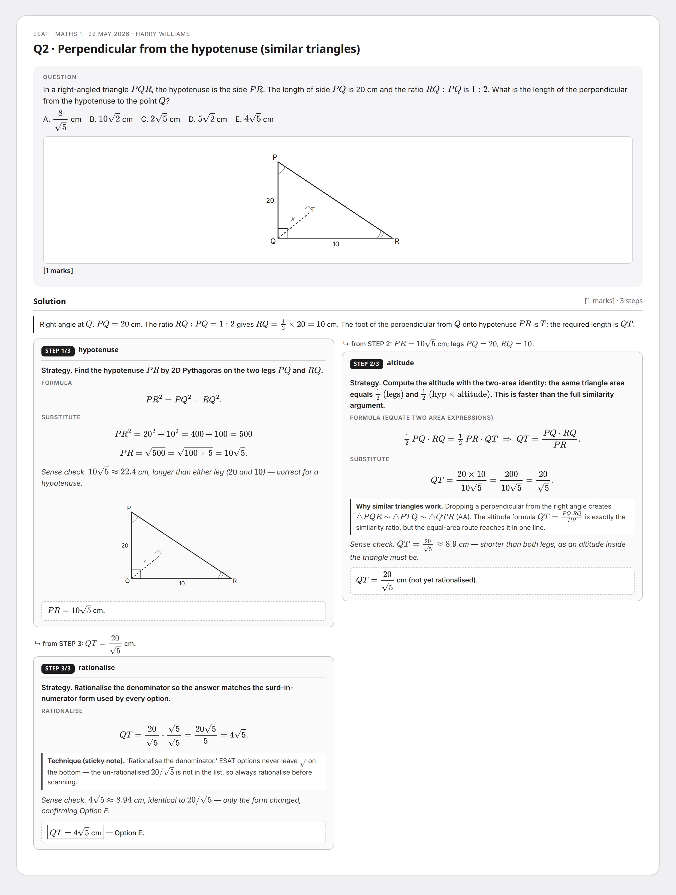
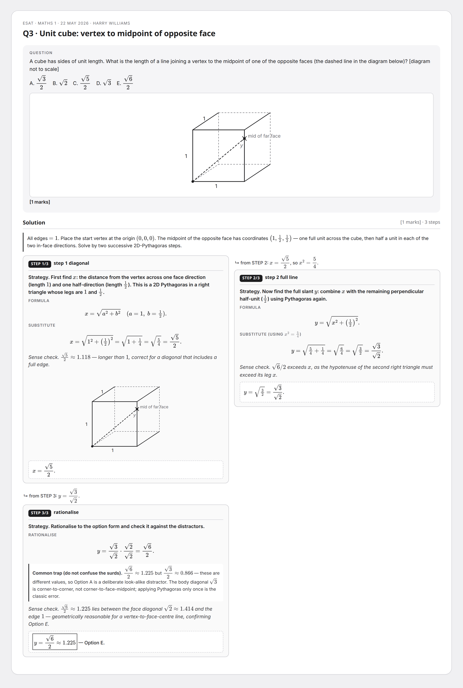
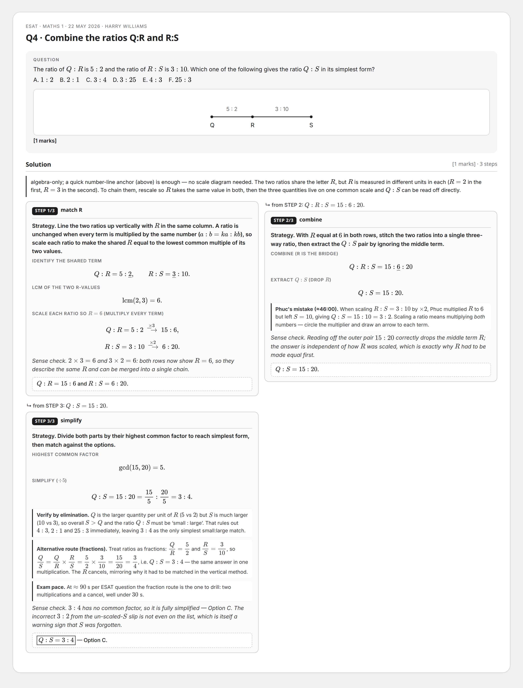
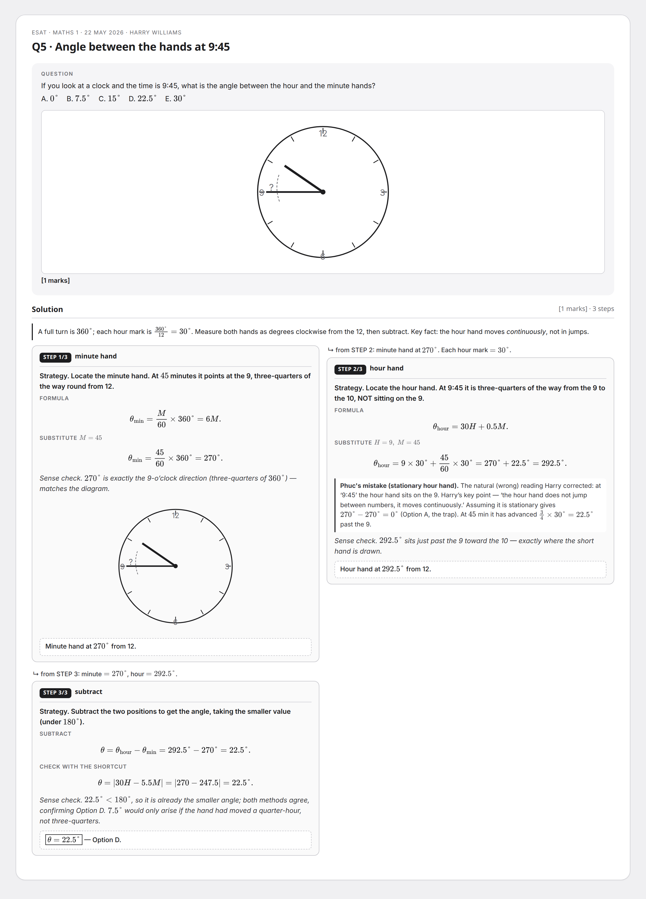
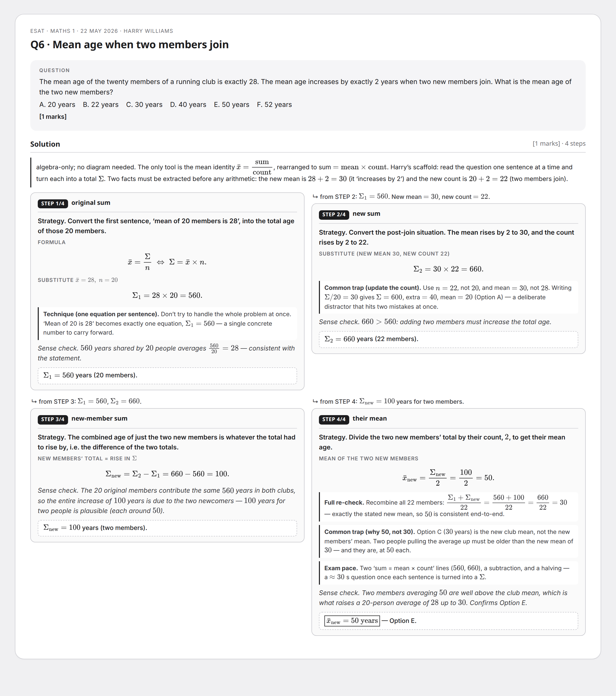

Self-contained per-step recall cards for Anki Image Occlusion.
Each gray Step box is a maskable target; the question header + STEP n/total badge remain visible.
Drag the PNG into Anki IO and rectangle-mask each Step box.
ESAT — 22 May 2026 (semicircle · similar triangles · cube · ratio · clock · mean)
Q1 · Semicircle-in-square area
ESAT — 22 May 2026 (semicircle · similar triangles · cube · ratio · clock · mean) · Attempted 22 May 2026 · 1 marks · 1 part(s) · 5 steps

Q2 · Perpendicular from the hypotenuse (similar triangles)
ESAT — 22 May 2026 (semicircle · similar triangles · cube · ratio · clock · mean) · Attempted 22 May 2026 · 1 marks · 1 part(s) · 3 steps

Q3 · Unit cube: vertex to midpoint of opposite face
ESAT — 22 May 2026 (semicircle · similar triangles · cube · ratio · clock · mean) · Attempted 22 May 2026 · 1 marks · 1 part(s) · 3 steps

Q4 · Combine the ratios Q:R and R:S
ESAT — 22 May 2026 (semicircle · similar triangles · cube · ratio · clock · mean) · Attempted 22 May 2026 · 1 marks · 1 part(s) · 3 steps

Q5 · Angle between the hands at 9:45
ESAT — 22 May 2026 (semicircle · similar triangles · cube · ratio · clock · mean) · Attempted 22 May 2026 · 1 marks · 1 part(s) · 3 steps

Q6 · Mean age when two members join
ESAT — 22 May 2026 (semicircle · similar triangles · cube · ratio · clock · mean) · Attempted 22 May 2026 · 1 marks · 1 part(s) · 4 steps

ESAT — 30 May 2026 (triangle area · sphere:cylinder · functions on 0
Q1 · Area of a right triangle with surd sides
Q2 · Fraction of a cylinder filled by an inscribed sphere
Q3 · Which expression is largest for 0 < x < 1
Q4 · Similar triangles giving a quadratic in x
Q5 · Percentage change in P when Q rises 40%
Q6 · Make b the subject of a = (b²+2)/(3b²−1)
{kind=link}
{kind=link}
{kind=link}
{kind=link}
{kind=link}
{kind=link}
{kind=link}
{kind=link}
{kind=link}
{kind=link}
{kind=link}
{kind=link}